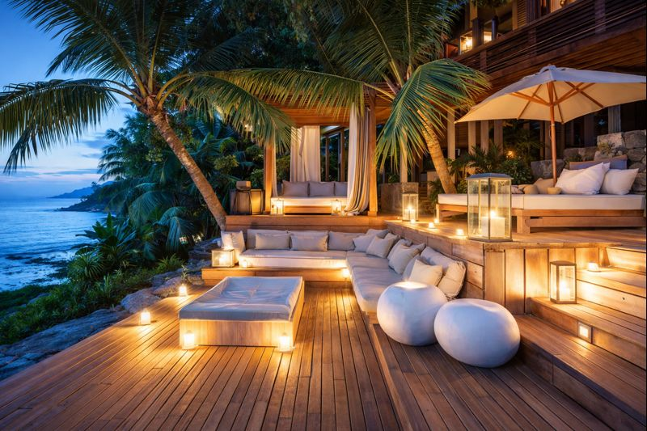

La Digue
180k
Anse Source d'Argent
La plage la plus photographiée au monde, célèbre pour ses blocs de granit rose

RetourUn Éden aux eaux turquoises et aux granits millénaires
Les Seychelles sont bien plus qu'une simple destination balnéaire ; elles sont l'incarnation d'un paradis originel. Cet archipel de 115 îles dispersées dans l'Océan Indien offre des paysages d'une beauté saisissante. Des plages iconiques de La Digue, comme Anse Source d'Argent avec ses rochers de granit sculptés par les siècles, à la Vallée de Mai sur l'île de Praslin, sanctuaire préhistorique du célèbre Coco de Mer, les Seychelles invitent à l'émerveillement. Ici, la nature est reine, protégée avec ferveur, abritant des tortues géantes et des espèces d'oiseaux uniques au monde. Le peuple seychellois, chaleureux et métissé, apporte une touche de culture créole vibrante à ce tableau idyllique.
Découvrez les 15 merveilles des Seychelles
La plage la plus photographiée au monde, célèbre pour ses blocs de granit rose

Forêt préhistorique abritant le Coco de Mer, la plus grosse graine du monde

Souvent classée parmi les plus belles plages du monde pour son eau cristalline

L'une des plus petites capitales au monde, riche en couleurs et saveurs créoles

Le plus grand atoll corallien au monde, sanctuaire des tortues géantes

Une île de terre rouge abritant une colonie de tortues géantes en liberté

La plage la plus populaire et animée de Mahé, idéale pour les activités nautiques

Un aquarium naturel spectaculaire regroupant six petites îles paradisiaques

Une réserve naturelle abritant la plus importante colonie d'oiseaux marins de l'Océan Indien

Une success story écologique où la nature a repris ses droits sur une ancienne plantation

Une plage sauvage et grandiose aux vagues impressionnantes, bordée de palmiers

Un voyage sensoriel au milieu des plantations d'épices (vanille, cannelle, muscade)
Le plus beau panorama de Mahé, chargé d'histoire (ancienne école d'esclaves libérés)
Un éden corallien pour les amoureux de solitude et d'oiseaux de mer
Une escale de luxe déconnectée du monde, entre plages de rêve et conservation
L'âme créole, le coeur battant de l'archipel.
La culture seychelloise est un mélange harmonieux d'influences africaines, européennes et asiatiques. Cette identité créole unique s'exprime dans la langue chantante, la musique entraînante (le Moutya et le Séga) et une hospitalité légendaire. L'histoire de l'archipel est marquée par les vagues de colons et d'esclaves, mais aussi par une conscience écologique précoce qui fait aujourd'hui des Seychelles un leader mondial de la conservation. Le festival créole annuel est le moment fort pour découvrir les arts, l'artisanat et l'art de vivre d'un peuple qui a su préserver son authenticité au milieu d'un cadre paradisiaque.
Danse traditionnelle aux racines africaines, symbole de résilience et de joie de vivre seychelloise (UNESCO).
Légende vivante de l'archipel, cette graine à la forme suggestive est le trésor endémique le plus précieux.
L'art du tressage des feuilles de palme et de pandanus pour créer des objets utilitaires et décoratifs raffinés.
Une gastronomie épicée et colorée, reflet du métissage culturel de l'archipel.

Les essences et l'artisanat d'exception des Seychelles. De l'huile de coco aux senteurs de vanille.
 Naturel
Naturel
Huile pressée à froid de manière artisanale, parfumée et riche en bienfaits pour la peau.
 Gourmet
Gourmet
Extrait naturel de vanille cultivée sous le soleil des Seychelles, au parfum intense et sucré.
 Artisanat
Artisanat
Savon artisanal saponifié à froid aux huiles essentielles de citronnelle locale, rafraîchissant.
Pendentif ou boucles d'oreilles façonnés à la main dans de la nacre aux reflets irisés.
Paréo en coton léger orné de motifs tropicaux réalisés à la main par des artistes locaux.
Infusion de citronnelle séchée au soleil, idéale pour une pause fraîcheur créole.

Île Privée, Ultra-Luxe

Félicité, Design & Nature

Mahé, Élégance & Vue

Praslin, Golf & Plage

Praslin, Villas avec Piscine

Silhouette, Nature & Confort
La cuisine seychelloise est un festin créole, riche en saveurs marines, épices et lait de coco.
Une spécialité locale audacieuse : roussette (chauve-souris) cuisinée dans une sauce masala épicée.
Poisson fraîchement pêché, mariné avec ail, piment et gingembre, grillé au feu de bois.
Dessert traditionnel à base de bananes plantains ou patates douces cuites dans du lait de coco.
Le "cœur de palmier", mets délicat et rare, servi en salade fraîche avec une vinaigrette légère.
Plat consistant à base de bananes plantains écrasées et de lait de coco, souvent accompagné de poisson.
Sauce tomate créole relevée avec des saucisses locales, servie avec du riz blanc.
Requin cuit, effiloché et mélangé avec du jus de bilimbi, des oignons et des épices.
Soupe légère de feuilles vertes locales (brèdes) assaisonnée de gingembre et d'ail.
Condiment à base de coco râpé frais, piment et oignons, accompagnement idéal des currys.
Crevettes mijotées dans une sauce onctueuse au lait de coco et curcuma.
Sucrerie artisanale à base de coco râpé et de sucre caramélisé, un délice seychellois.
Glace rafraîchissante aux arômes de citronnelle fraîche, parfaite pour finir un repas.
Partagez la joie de vivre seychelloise lors des célébrations annuelles.
La plus grande célébration de l'identité créole à travers tout l'archipel (Octobre), avec musique, arts et défilés.
Compétitions nautiques, concerts et animations populaires sur la plage de Beau Vallon (Septembre).
Célébrations nationales (29 Juin) avec parades, feux d'artifice et ambiance festive dans toutes les îles.
Les périodes charnières entre les vents alizés. La mer est calme, la visibilité sous l'eau est exceptionnelle (30m+), idéal pour la plongée et le snorkeling.
Saison des alizés du Sud-Est. Le climat est plus frais et sec, idéal pour la randonnée et la voile, bien que la mer puisse être plus agitée sur certaines côtes.
L'archipel est très sûr. Vigilance classique sur les plages désertes. Les courants peuvent être forts, respectez les signalisations.
Vols inter-îles ou ferries rapides (Cat Cocos). Location de voiture idéale sur Mahé et Praslin. Vélo conseillé sur La Digue.
Pas de visa requis pour toutes les nationalités. Une autorisation de voyage électronique (STA) est nécessaire avant le départ.
Roupie Seychelloise (SCR). Euros et dollars largement acceptés. Cartes bancaires utilisables dans tous les hôtels et commerces.
Experte Plages & Lagons
Native de Mahé, Lola vous fera découvrir les criques secrètes et les plus beaux fonds marins de l'archipel.
Expert Biodiversité & Vallée de Mai
Naturaliste passionné, Marc vous guidera dans la forêt de Praslin pour une immersion botanique inoubliable.
Experte Culture & Gastronomie
Sophie vous emmènera au coeur de la vie locale, entre marchés colorés et secrets de cuisine créole.